Week 9
Social
Network Visualization & Common Data Transforms
Social Networks
Very nice overview of the display side of this work at: http://www.cmu.edu/joss/content/articles/volume1/Freeman.html
and a nice general introduction here: http://faculty.ucr.edu/~hanneman/nettext/index.html
Goal
- reveal
clusters of strongly linked actors (the social groups)
- reveal
specialized actors who play special roles in the network (e.g.
people who link various social groups)
Two major representations:
Graphs (more common)
Matrix
- rows
and columns are actors (so the matrix is usually square)
- numbers
or symbols in the cells represent social interaction
- might
be symmetric or asymmetric (two entities may not feel same way
about each other)
- may
have 0 / 1 or -1 / - / +1 in the cells
- more
examples at http://faculty.ucr.edu/~hanneman/nettext/C5_%20Matrices.html
(as an aside,
for mow info about Bob and friends, see:
http://www.imdb.com/title/tt0064100/ )
5
phases in how these images have been generated
- 1930s -
images
drawn by hand
- 1950s -
computers used to algorithmically compute where the points and
lines should be
- 1970s -
computers drawing images on plotters
- 1980s -
personal computers displaying images on monitors in colour
- 1990s -
interaction, spring systems (force directed placement), common
platforms (eg java) on WWW
Jacob Moreno
1930s
"We have first to visualize . . . A
process of charting has been devised by the sociometrists, the
sociogram, which is more than merely a method of presentation.
It is first of all a method of exploration. It makes possible
the exploration of sociometric facts. The proper placement of
every individual and of all interrelations of individuals can be
shown on a sociogram. It is at present the only available scheme
which makes structural analysis of a community possible."
"The fewer the number of lines crossing, the better the
sociogram."
The most famous of his graphs is the friendship networks among
elementary school students
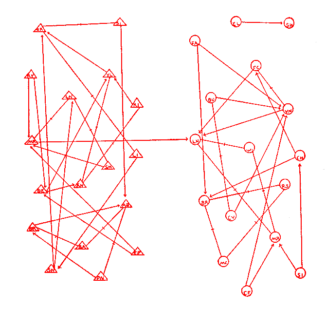
Boys are represented as Triangles,
girls as circles. The arrows show whether person A considers
person B to be a friend (there is a line from A to B.) If both
people consider the other to be a friend then there is a dash in
the middle of the line.
another
example shows both liking someone (red) and dislinking someone
(black) for the players on an American Football team. Note that
no-one likes 5RB and several people actively dislike him. How
well are they likely to block for him when he has the ball?
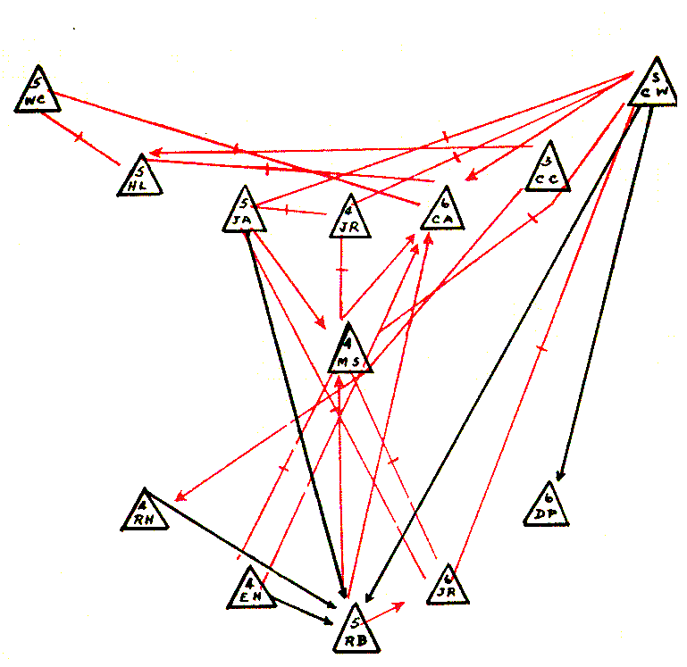
He would often try to position the
points on the page in relation to their actual location in
physical space. If he had no particular reason to put the nodes
in particular locations he would default to a circle.
Moreno
introduced five important ideas about the proper construction of
images of social networks:
- he drew
graphs
- he drew
directed graphs
- he used
colors to draw multigraphs
- he
varied the shapes of points to communicate characteristics of
social actors
- he
showed that variations in the locations of points could be
used to stress important structural features of the data.
Lundberg and Steel 1930s emphasized
the sociometric status of each node by making nodes with high
status larger and placing them near the center of the graph
Northway 1940s created the target
sociogram where nodes in the center are chosen more often than
nodes further out and all the points in the same ring are chosen
the same number of times. She emphasized that lines should be
short. Here is her target sociogram of a first grade class.

Stanley Milgram 1967 - small-world
phenomenon - Networks that exhibit this property are composed of
a number of densely knit clusters of nodes, but at the same
time, these clusters are well connected in that the average path
length between any two randomly chosen nodes is 6 on average.
More on the small world experiment:
http://en.wikipedia.org/wiki/Small_world_experiment
These days
research involves looking at how these social networks change over
time
Clearly this is all pretty straight
forward when there aren't that many nodes, but as the number of
nodes and edges increases the visualizations get crowded and
confusing very quickly.
Users should have the ability to move the nodes around, collapse
and unroll hierarchies
several tools to look at Facebook friends - http://adherence-solutions.com/social-media/facebook-visualization-2034/
Here is a nice look at Facebook connections across the US - http://petewarden.typepad.com/searchbrowser/2010/02/how-to-split-up-the-us.html
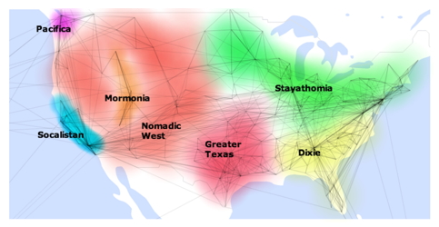
enron emails -http://www.visualcomplexity.com/vc/project.cfm?id=393
nice
interactive java demo - vizster - http://hci.stanford.edu/jheer/projects/vizster/
here is an interesting one for countries (focusing on borders and
languages) from the CIA world factbook data - http://moritz.stefaner.eu/projects/relation-browser/
twitter
visualization - http://twittertoolsbook.com/10-awesome-twitter-analytics-visualization-tools/
also http://trendsmap.com
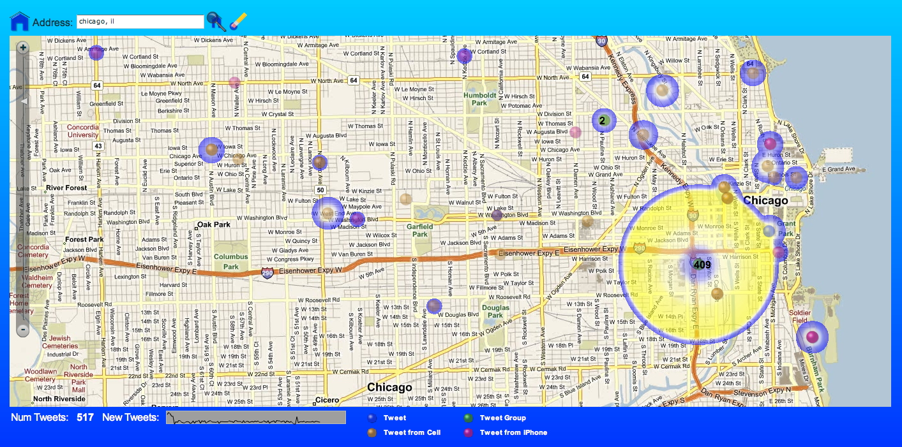
orgnet - http://www.orgnet.com/cases.html
the steroids one is a nice example: http://www.orgnet.com/steroids.html
and the twitter one: http://www.orgnet.com/twitter.html
and the co-authorship one: http://www.orgnet.com/SN.html
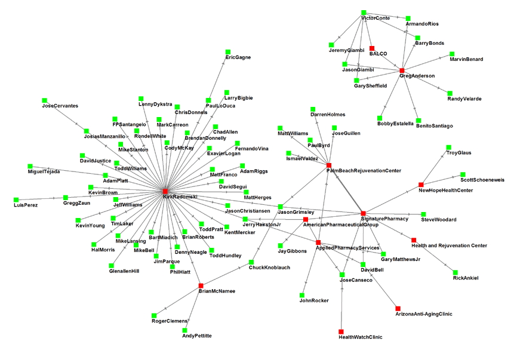
big
list of analysis tools at http://en.wikipedia.org/wiki/Social_network_analysis_software
http://www.kdnuggets.com/software/visualization.html
http://www.graphviz.org/
graphviz - a nice example of a non-interactive tool
a new piece
of software in 2010 is NODEXL - http://nodexl.codeplex.com/
Here is a
good overview of dynamic social network visualization:
The Art and
Science of Dynamic Network Visualization
Skye
Bender-deMoll, skyebend@stanford.edu, Daniel A. McFarland,
mcfarland@stanford.edu
http://www.cmu.edu/joss/content/articles/volume7/deMollMcFarland/
and here is
another diagram from the xkcd comic at http://xkcd.com/
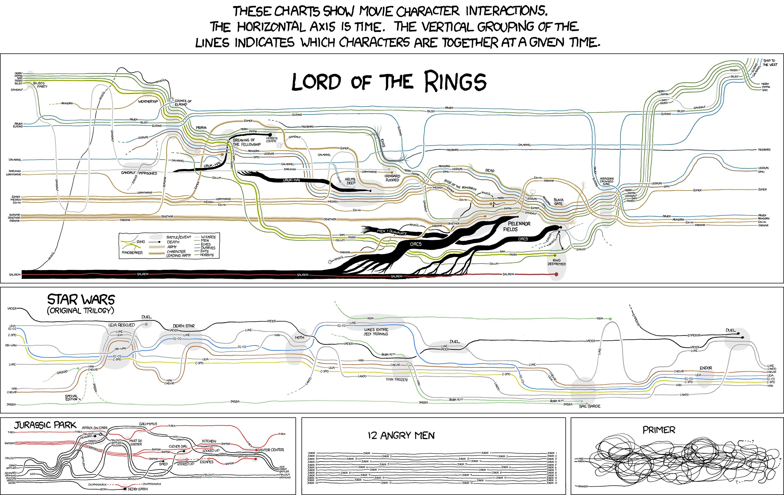
and some more
datasets at the Stanford Large Network Dataset Collection: http://snap.stanford.edu/data/
Common
Data Transforms
What should I do
when I get a new dataset
- look at
the meta-data (ideally the rules for this dataset should have
been set up before the data was collected and written down
including the formats, bounds, null values)
- is the
data for each attribute within bounds?
- are
there values that are missing?
- are
attributes that are supposed to be unique really unique?
- look at
the data distribution of the good data - are there any odd
outliers?
Data mining
By Jiawei Han, Micheline Kamber
Data Cleaning
- missing
values
- values
out of range
- inconsistent
formats
Data Integration - How can I combine different data sets from
different sources
- different
date
formats
(
e.g. Jan-10-90 or 01.10.90 or 10.01.90 or 01/10/1990 or ...)
- different
units
of measure (metric vs imperial, lat/lon vs UTM)
- different
coverage
areas (some data at neighborhood level, county level, state
level, some collected per month and some per year)
Data Transformation
- smoothing - emphasizes
longer trends over shorter duration changes
- generalization -
replaces detailed concept with a general one (e.g. for each
data value, replace a zip code with a state name, or a
specific age with an age range 20-30)
- normalization -
depending how the data will be visualized you may need to
transform it to a given range (e.g. 0 .0 to 1.0)
- aggregation - combines
/ summarizes data (eg add up all data for M, T, W, Th, F and
store the weekly total, or the monthly total, or the yearly
total, or average the data for all zip codes in a state and
store the state average)
aggregation
leads us into the more general concept of data reduction
Miles and Huberman (1994):
Data reduction is not something
separate from analysis. It is part of analysis. The
researcher’s decisions—which data chunks to code and which to
pull out, which evolving story to tell—are all analytic
choices. Data reduction is a form of analysis that sharpens,
sorts, focuses, discards, and organizes data in such a way
that “final” conclusions can be drawn and verified.
Data
Reduction - gives you a reduced dataset that gives you similar
analytical results
- reduce the number of dimensions
- attribute subset selection
- one attribute (e.g. age) may be derived from another or
directly correlated to another, or might be irrelevant in
the work you are doing so those attributes can be removed
- data cube aggregation -
if you think of all the data you collected as forming a
multidimensional cube which each attribute being an edge of
the cube then you can collapse various dimensions down by
aggregating the values (e.g. the example above taking data
for each day of the week and storing only the weekly total)
- dimensionality reduction
- encoding used to reduce dataset size - may be lossy or
lossless - e.g. using principal component analysis,
wavelets, math increases rapidly here.
- reduce the amount of
collected/generated data
- replace
data
by a model that generates the data values,
- clustering
(eg
replace
all
of
the
attribute
values collected between depths 10 and 15 with the average
of those attribute values)
- sampling
(keep
every nth value, or one random value within each cluster)
Data Discretization and Concept Hierarchy Generation - reduces
the number of possible values for a given attribute by replace
data values with ranges or higher level concepts (e.g. numerical
age could become 0s, 10s, 20,s 30s, ... 80s, 90s, 100s or young,
middle-age, old, addresses could become city or state or
country.)
Here is a nice clustering example
from thematic cartography on data of the percentage of the
population that was foreign-born in Florida in 1990. Here is the
original data:
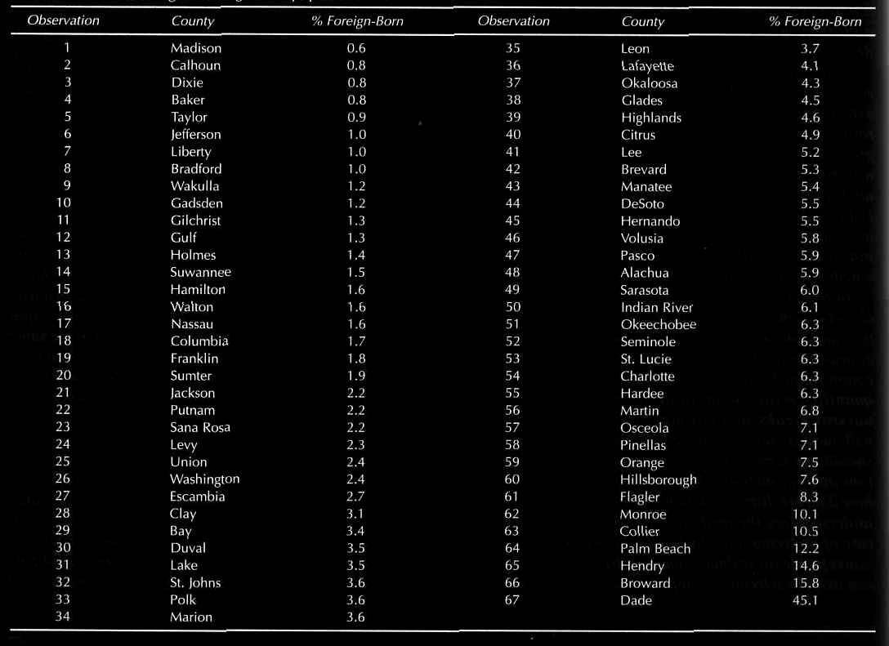
Start by ordering the data in
whatever order seems appropriate, in this case by increasing %
foreign-born, then there are several typical ways to try
and categorize the data.
Equal Intervals:
We take the range of data and divide it by the number of classes
(5 in this case.) This is really easy to compute but doesn't
take into account the distribution of the data.
Quantiles:
Starting with the number of classes, 5 in this case, an equal
number of data points are placed into each class. This is also
easy to compute, and lets you easily see the top n% of the data,
but again it fails to take into account the distribution
of the data.
Mean-Standard
Deviation: Starting with the mean and standard
deviation of the data, data points are placed in appropriate
classes e.g. (less than mean - 2 standard deviations, mean -2 standard
deviations to mean -1 standard deviation, mean +/- 1 standard
deviations, mean +1 standard deviation to mean
+2 standard deviations,
greater than mean + 2 standard deviations). This
works well with data that follows a normal distribution, but not
in cases like the one shown above.
and a quick refresher on standard deviation from Wikipedia:
http://en.wikipedia.org/wiki/Standard_deviation
for a normal distribution: 68% are within 1 standard
deviations, 95% are within 2 standard
deviations
Maximum Breaks:
Starting with the number of classes and the differences between
adjacent data points, the largest breaks are used to define the
classes. Maximum breaks is course in that it only takes into
account the breaks and not the distribution between the breaks.
Natural breaks
tries to finesse this by making the classifications more
subjective.
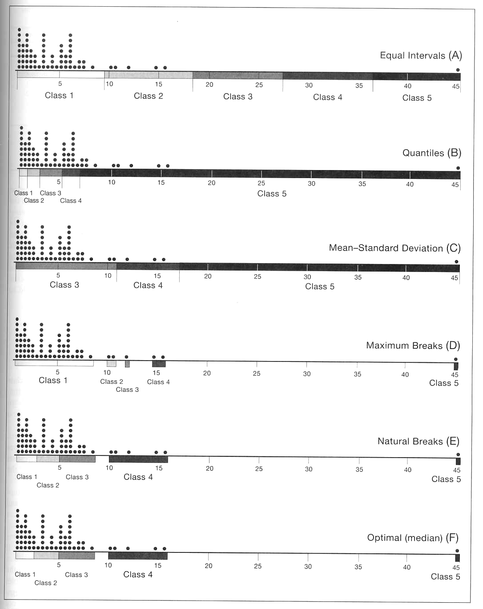
and here is
how each of those would be visualized:
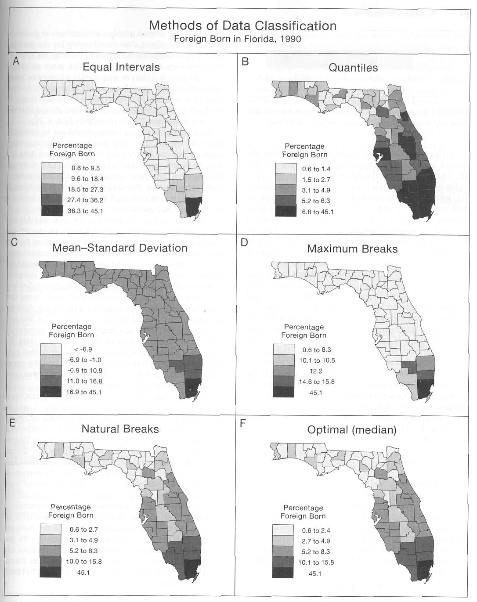
Here is a table summarizing the benefits of each approach.
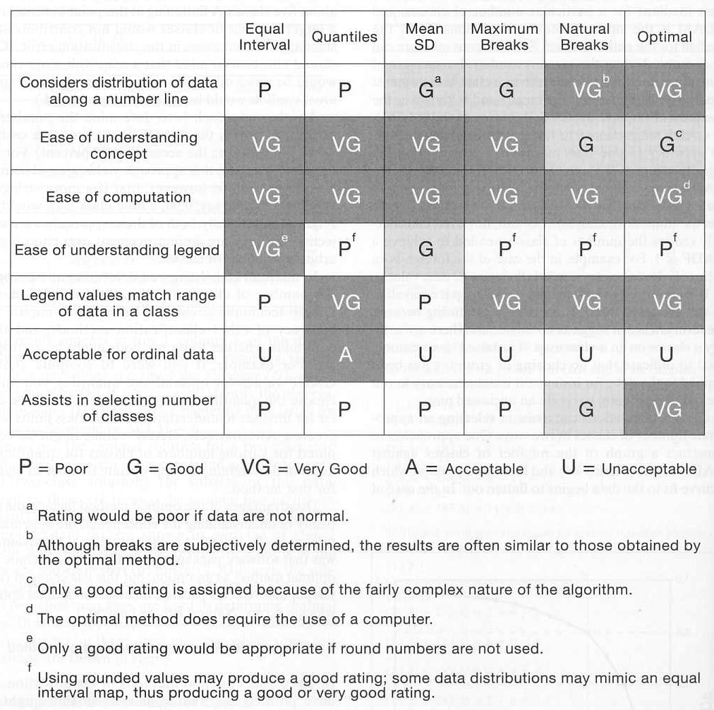
and here is
the overview from Information Graphics - a Comprehensive
Illustrated Reference
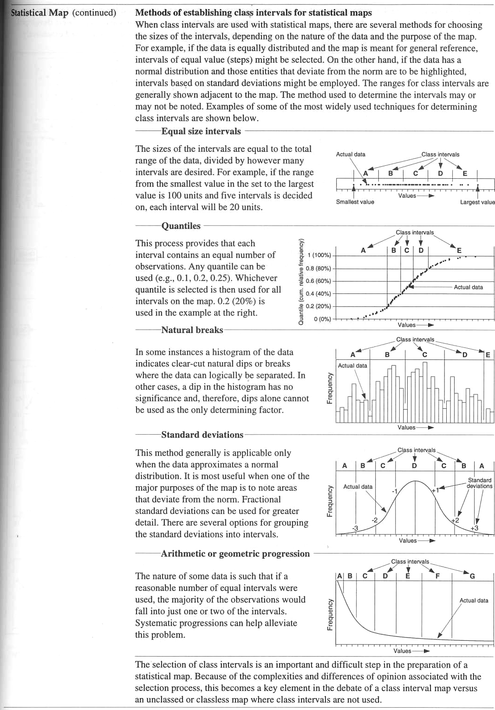
Provenance - data moves
through several forms and filters on its way to being visualized
and analyzed. Its important to keep track of who has done what
to the data at each step so the validity of the final product
can be ascertained, and if any issues arise with the original
data collection or the intermediate steps then its easy to find
which data products are affected.
You wouldn't just grab data off the web and assume that its
correct, would you? would you?
A nice overview is given in http://www.cs.indiana.edu/pub/techreports/TR618.pdf
where they give this list of applications for provenance:
-
Data Quality: Lineage can be used to
estimate data quality and data reliability based on the
source data and transformations. It can also provide proof
statements on data derivation.
-
Audit Trail: Provenance can be used to
trace the audit trail of data, determine resource usage,
detect errors in data generation, help determine who gets
the patent.
-
Replication Recipes: Detailed provenance
information can allow repetition of data derivation, help
maintain its currency, and be a recipe for replication.
-
Attribution: Pedigree can establish the
copyright and ownership of data, enable its citation, and
determine liability in case of erroneous data.
-
Informational: A generic use of lineage is
to query based on lineage metadata for data discovery. It
can also be browsed to provide a context to interpret data.
The meta data that moves along with
a dataset should give these details, and as the information
moves from raw data through various stages of processing the
meta data should be updated in sufficient detail.
Coming Next Time
Medical Visualization and Scientific Visualization
last
revision: 10/23/12